This report presents gem5-MCP, a Model Context Protocol (MCP) server that allows a large language model (LLM) such as Claude to configure, launch, monitor and interpret gem5 simulations through validated tool calls, together with a web dashboard for side-by-side comparison. Using the framework, 97 simulations (31 experiment groups) were executed on the X86, RISC-V and ARM ISAs in syscall-emulation mode on gem5 v25.1. Increasing the L1 data cache from 4 kB to 64 kB cut the matrix-multiplication miss rate from 12.01% to 0.02% and raised IPC by 36.3%, while an AES SubBytes workload was completely insensitive to capacity. At a fixed 16 kB, moving from direct-mapped to 8-way associativity improved IPC by 37.9%. On the core side, the out-of-order O3CPU achieved 5.0× the IPC of an in-order core on an ILP-rich kernel, and enlarging the reorder buffer from 16 to 192 entries improved IPC by 52.5% before saturating. Built-in validation microbenchmarks confirmed that the simulated memory hierarchy and pipeline behave as configured.
Keywords: gem5 Simulator, Model Context Protocol, Out-of-Order Execution, Reorder Buffer, Superscalar Width, Cache Associativity, IPC, Instruction Set Architecture, X86, RISC-V, ARM.
Modern high-performance processors rely on two broad strategies to keep execution units busy: exploiting instruction-level parallelism (ILP) inside the core, and hiding the ever-growing gap between processor and DRAM speed (the "memory wall") with a multi-level cache hierarchy.
Although gem5 is extremely capable, several practical barriers limit how quickly students and designers can use it for design-space exploration:
We designed and implemented gem5-MCP, a Python MCP server that wraps gem5 as a safe, asynchronous simulation service. An LLM client (Claude) or the accompanying web dashboard submits experiments as validated parameter sets; the server compiles the workload for each target ISA, runs gem5 inside WSL Ubuntu 24.04, parses the statistics and returns normalised metrics.
The key design decisions that address the limitations of Section 2 are:
| MCP Tool | Function |
|---|---|
| submit_simulation | Launch one validated run → job_id |
| compare_source_across_isas | Compile once per ISA, run all, compare |
| run_parameter_sweep | Vary one hardware knob (cache size, assoc., ROB, width ...) |
| run_cpu_sweep | Same program on atomic / timing / minor / o3 CPUs |
| get_comparison / get_stats | Live status, normalised metrics, filtered raw stats |
| run_validation | IPC and memory-ladder self-consistency checks |
| run_lab / explain_lab | Guided course labs with explanation prompts |
| list_checkpoints / restore_from_checkpoint | Checkpoint reuse for long runs |
| Parameter | Baseline value |
|---|---|
| Simulator / mode | gem5 v25.1.0.1, Syscall-Emulation (SE), single core |
| ISAs | X86, RISC-V (RV64), ARM (AArch64) |
| CPU models | AtomicSimpleCPU, TimingSimpleCPU, MinorCPU, O3CPU |
| Core clock | 1 GHz |
| L1 I-cache / D-cache | 32 kB, 8-way, LRU (each) |
| L1D prefetcher / MSHRs | Stride prefetcher / 16 |
| L2 cache (unified) | 256 kB, 4-way, LRU |
| Cache line size | 64 B |
| Main memory | 512 MB, DDR3-1600 (single channel) |
| O3 pipeline | gem5 defaults (8-wide, 192-entry ROB) unless swept |
All experiments below were issued through the MCP tools (or the dashboard, which calls the same backend) and every reported number is taken directly from the stored gem5 statistics.
The process begins with a natural-language request (e.g. "sweep the L1D associativity at 16 kB for this matrix multiply and explain the result"). Claude translates it into a validated MCP tool call; the server compiles the workload, fans out one gem5 job per configuration, and returns a comparison_id that is polled until all runs finish. The collected metrics are then charted and interpreted.
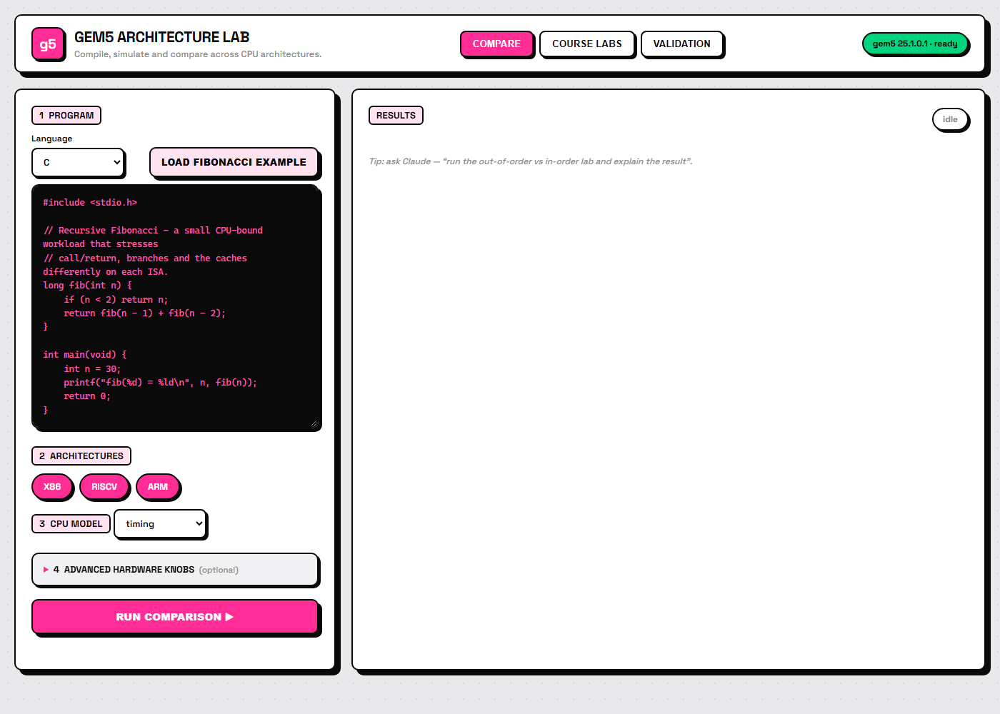
| L1 Data Cache Size | Cycles | IPC (Speed) | L1D Miss Rate |
|---|---|---|---|
| 4kB | 18,304,743 | 0.451 | 12.01% |
| 32kB | 13,778,227 | 0.599 | 0.90% |
| 64kB | 13,428,291 | 0.615 | 0.02% |
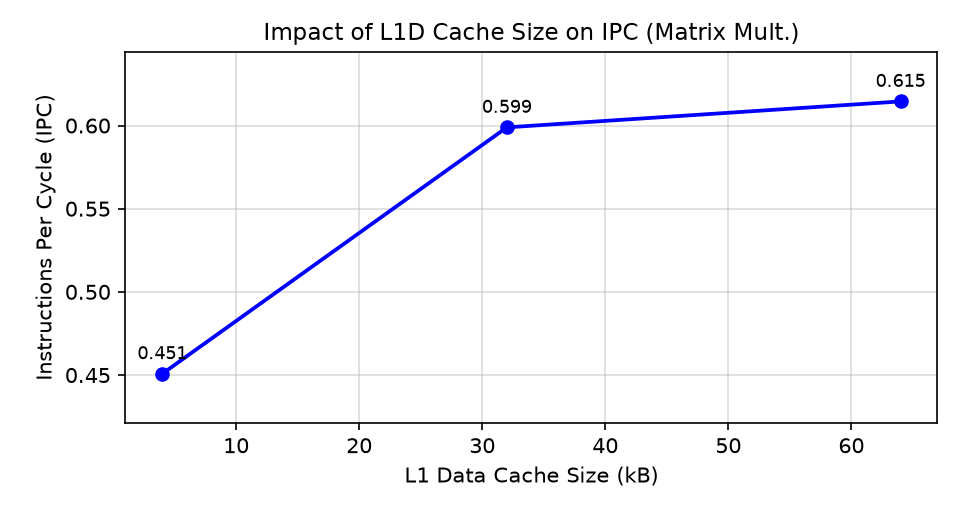
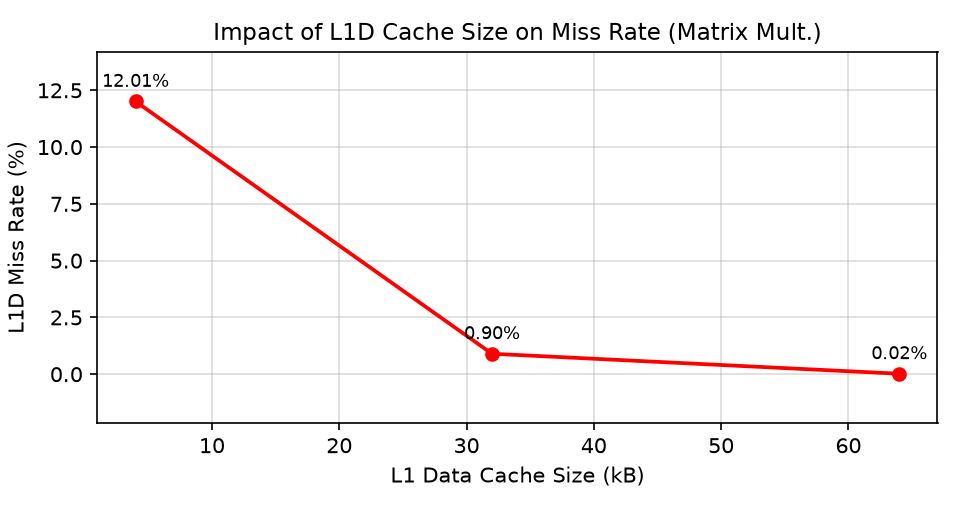
| L1 Data Cache Size | Cycles | IPC (Speed) | L1D Miss Rate |
|---|---|---|---|
| 4kB | 83,217,718 | 0.546 | 0.01% |
| 32kB | 83,216,284 | 0.546 | 0.01% |
| 64kB | 83,216,253 | 0.546 | 0.01% |
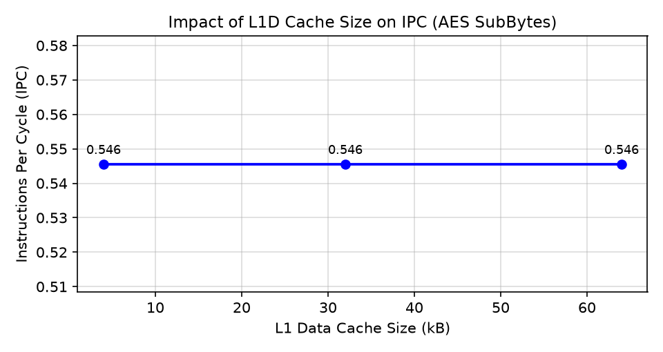
| Associativity (16kB Cache) | Cycles | IPC (Speed) | L1D Miss Rate |
|---|---|---|---|
| 1-Way (Direct Mapped) | 19,005,513 | 0.434 | 12.90% |
| 2-Way Set Associative | 18,534,551 | 0.445 | 12.87% |
| 8-Way Set Associative | 13,779,992 | 0.599 | 0.90% |
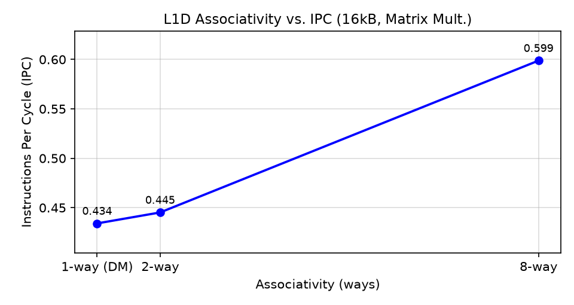
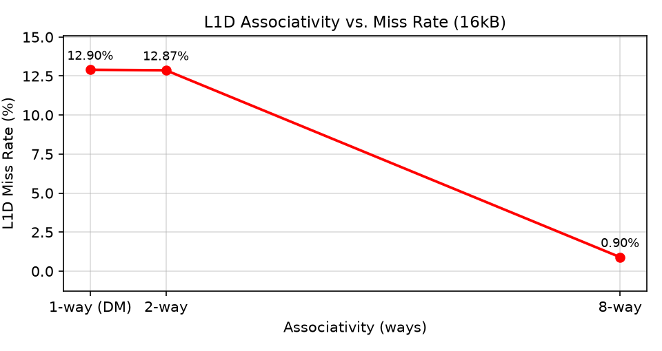
| CPU Model | Pipeline Type | Branch kernel IPC | ILP kernel IPC |
|---|---|---|---|
| AtomicSimpleCPU | Functional, atomic memory | 0.423 | 0.521 |
| TimingSimpleCPU | In-order, non-pipelined | 0.666 | 0.746 |
| MinorCPU | In-order, 4-stage pipeline | 0.274 | – |
| O3CPU | Out-of-order superscalar | 0.981 | 3.732 |
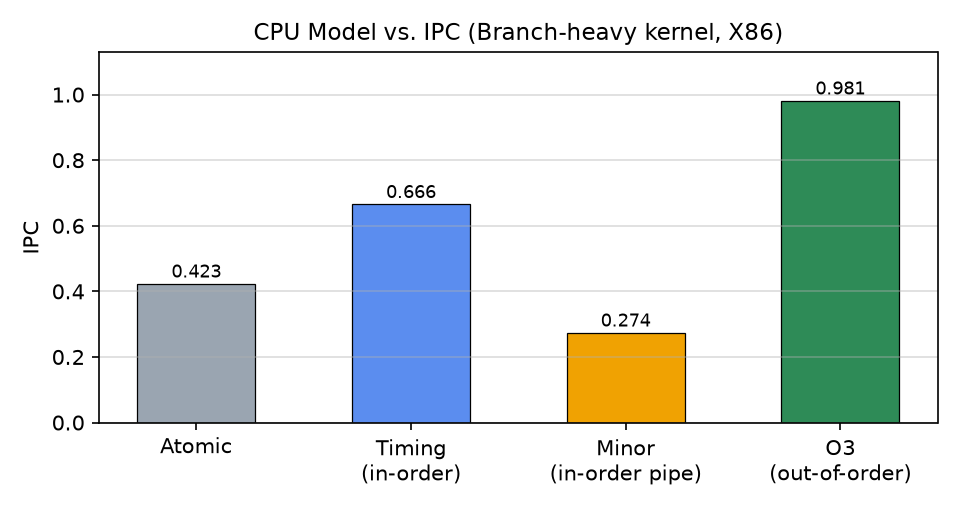
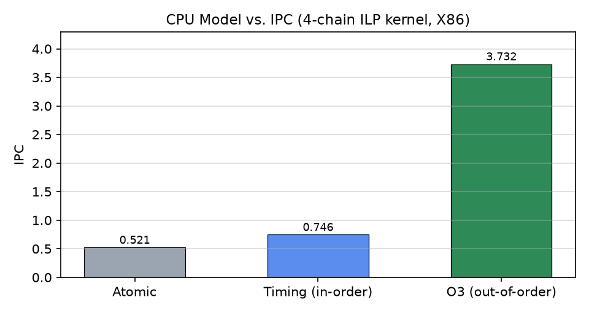
| ROB Entries | 16 | 32 | 64 | 128 | 192 |
|---|---|---|---|---|---|
| Cycles | 1,526,930 | 1,163,744 | 1,022,279 | 1,002,286 | 1,001,216 |
| IPC | 0.644 | 0.844 | 0.961 | 0.980 | 0.981 |
| Width | 1 | 2 | 4 | 8 |
|---|---|---|---|---|
| IPC vs. fetch width (branch kernel) | 0.383 | 0.617 | 0.824 | 0.981 |
| IPC vs. issue width (matrix mult.) | 0.531 | 1.055 | – | 2.661 |
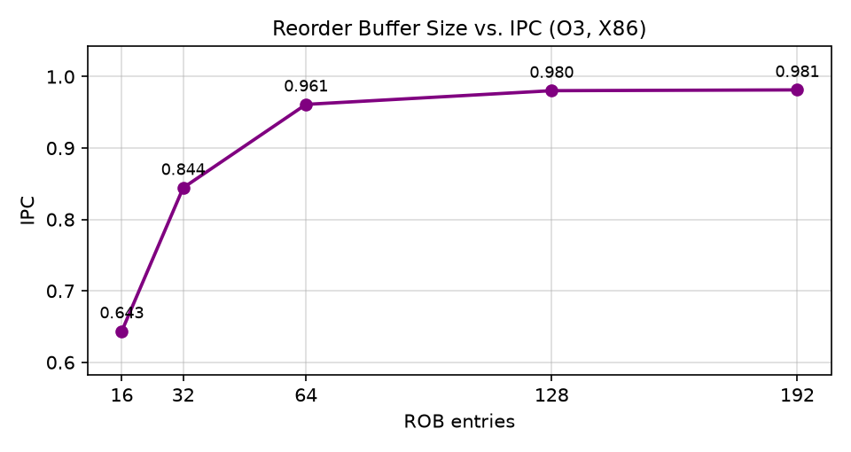
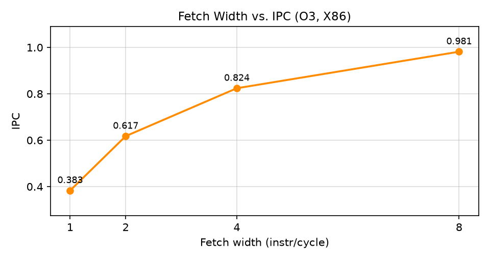
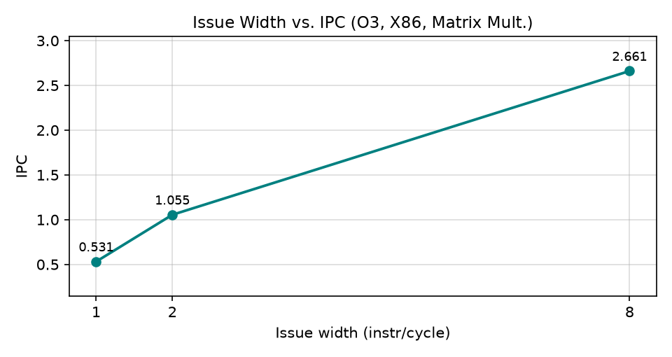
| Workload / CPU | ISA | Instructions | Cycles | CPI | IPC |
|---|---|---|---|---|---|
| fib(30) TimingSimpleCPU | X86 | 23,890,502 | 38,712,831 | 1.620 | 0.617 |
| RISC-V | 23,575,212 | 32,605,260 | 1.383 | 0.723 | |
| ARM | 23,657,424 | 28,697,769 | 1.213 | 0.824 | |
| Branch kernel O3CPU | X86 | 982,552 | 1,001,216 | 1.019 | 0.981 |
| RISC-V | 818,435 | 798,964 | 0.976 | 1.024 | |
| ARM | 916,895 | 791,355 | 0.863 | 1.159 | |
| Matrix mult. O3CPU | X86 | 4,381,900 | 1,899,665 | 0.434 | 2.307 |
| RISC-V | 7,326,245 | 2,357,018 | 0.322 | 3.108 |
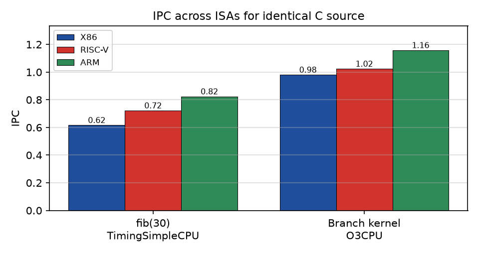
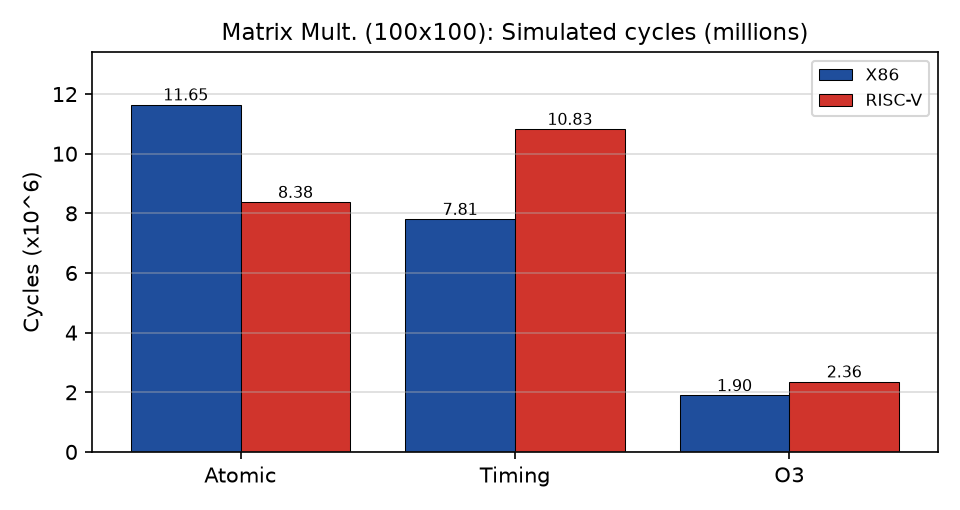
| Working Set | Cycles | CPI | L1D Miss Rate | L2 Miss Rate |
|---|---|---|---|---|
| 16 kB (fits L1) | 8,285,374 | 1.349 | 0.02% | 54.47%* |
| 128 kB (fits L2) | 13,463,555 | 2.164 | 18.93% | 0.05% |
| 8 MB (DRAM) | 67,843,677 | 5.702 | 33.14% | 76.98% |
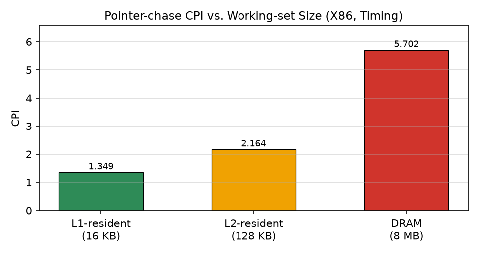
Both automated validation checks returned PASS: (i) O3 IPC (3.731) > in-order IPC (0.746) and O3 IPC > 1.2; (ii) cycles strictly increase L1 < L2 < DRAM.
1. Mitigating Capacity Misses: In the i-j-k matrix multiplication the inner loop walks a column of mat2 with a 400-byte stride, touching 100 distinct cache lines (≈6.4 kB) that are reused across consecutive values of j. A 4 kB L1D cannot hold this set, giving a 12.01% miss rate. At 32 kB the set fits and misses fall to 0.90%; at 64 kB the full 120 kB working set is almost captured (0.02%, essentially compulsory misses). IPC rose by 36.3% and cycles fell by 26.6%, with diminishing returns beyond 32 kB.
2. Algorithmic Sensitivity: The AES SubBytes kernel was completely insensitive to capacity: cycles changed by only 1,465 out of 83.2 million (<0.002%). The 256-byte S-Box fits trivially in even a 4 kB cache, and the 150 kB payload is streamed sequentially, a pattern the stride prefetcher hides almost perfectly. Adding cache therefore buys nothing; this workload is limited by the in-order core's execution rate, not by memory.
3. Mitigating Conflict Misses: At a fixed 16 kB, direct-mapped and 2-way caches both miss ≈12.9% of the time because the strided column lines map onto a small number of sets and evict each other. Moving to 8-way reduced misses 14× to 0.90% and improved IPC by 37.9%. Notably, the 16 kB 8-way cache matched the 32 kB 8-way cache of Experiment 1 (IPC 0.5988 vs. 0.5989), showing that the "capacity" loss at small sizes was largely a conflict problem that associativity alone can solve.
4. In-order vs. Out-of-order: On the ILP kernel with four independent dependency chains, O3CPU reached an IPC of 3.73, a 5.0× improvement over the in-order TimingSimpleCPU (0.75), because register renaming and a 192-entry ROB allow several chains to issue each cycle. On the branch kernel, whose branches depend on random data, the gain is only 1.47× (0.98 vs. 0.67): frequent mispredictions flush the speculative window. The pipelined MinorCPU scored lowest (0.27) because each misprediction costs a pipeline refill, while the non-pipelined TimingSimpleCPU never speculates. AtomicSimpleCPU is a functional model with approximate memory latency and should not be used for performance conclusions.
5. Out-of-order Resources: Enlarging the ROB from 16 to 64 entries raised IPC from 0.64 to 0.96 (+49%); going to 192 entries added only 2% more, so the window saturates once it covers the branch-resolution latency. Fetch width scaled IPC 2.56× from 1 to 8 on the branch kernel, and issue width scaled IPC 5.0× (0.53 → 2.66) on the matrix multiply, whose independent multiply-accumulates provide abundant ILP. These trends reproduce the classic ILP wall: extra width and window pay off only as far as the workload's parallelism and branch predictability allow.
6. ISA Effects: For recursive Fibonacci all three ISAs executed nearly the same number of instructions (±1.3%), yet ARM needed 25.9% fewer cycles than X86 and RISC-V 15.8% fewer, reflecting X86's micro-op expansion of push/pop/call sequences and memory-operand instructions. On the matrix multiplication, RISC-V executed 67% more instructions than X86 because X86 folds loads into arithmetic instructions with complex addressing; RISC-V's simpler instructions achieved a higher O3 IPC (3.11 vs. 2.31) but still took 24% more cycles. This confirms that execution time = IC × CPI × cycle time, and neither instruction count nor IPC alone decides ISA efficiency.
7. Memory Hierarchy Validation: With the arithmetic held constant, CPI rose from 1.35 (L1-resident) to 2.16 (L2-resident) to 5.70 (DRAM-resident), i.e. 4.2× slower when data spills to DRAM. Because each load depends on the previous one, neither out-of-order execution nor the prefetcher can hide this latency. The ladder, together with the IPC check, gives confidence that the configured caches and cores behave as intended.
8. Framework Effectiveness: All 97 simulation jobs (78 X86, 14 RISC-V, 5 ARM; 34 on O3CPU) completed without failure, using about 27 minutes of total host time. Each multi-run sweep was triggered by a single MCP tool call, with compilation, queueing, statistics parsing and charting handled automatically, replacing a workflow that would otherwise need dozens of manual script edits and command invocations.
This project shows that exposing gem5 through a validated Model Context Protocol server turns a CLI-only research simulator into an interactive design-space exploration tool that an AI assistant or a student can drive safely. The experiments reproduce the central lessons of modern processor architecture. Cache capacity and associativity must be matched to the workload's access pattern: an 8-way 16 kB L1D performed as well as a 32 kB one, while streaming cryptographic code gained nothing from extra cache. Out-of-order execution delivers large IPC gains (up to 5×) only when the program exposes ILP and predictable control flow, and ROB and width returns saturate quickly. ISA comparisons must weigh instruction count and CPI together. Future work includes full-system Linux boots, multi-core coherence studies, branch-predictor exploration and power/area estimation (e.g. McPAT) so that the framework can report performance-per-watt alongside IPC.
@mcp.tool()
async def run_parameter_sweep(
source: str, isa: str, axis: str, values: list[Any],
cpu: str = "timing", language: str = "c",
base_params: dict[str, Any] | None = None,
) -> dict[str, Any]:
"""Sweep one hardware parameter across values and compare (e.g. cache-size study).
axis: l1d_size, l1d_assoc, l2_size, rob_entries, fetch_width, issue_width, ...
base_params: fixed params held across all runs, e.g. {"l1d_size":"16kB"}.
Poll the returned comparison_id with get_comparison to chart the effect."""
try:
return await comparisons.create_sweep(
source=source, language=language, isa=isa, axis=axis, values=values,
cpu=cpu, base_params=base_params)
except Exception as exc:
return {"error": f"{type(exc).__name__}: {exc}"}
class _Base(BaseModel):
model_config = {"extra": "forbid"} # unknown keys are rejected
isa: Literal["X86", "RISCV", "ARM"]
cpu: Literal["atomic", "timing", "o3", "minor"] = "timing"
clock: str = "1GHz"
l1d_size: str = "32kB"; l1d_assoc: int = Field(8, ge=1, le=64)
l2_size: str = "256kB"; l2_assoc: int = Field(4, ge=1, le=64)
prefetcher: Literal["none","stride","tagged","ampm","bop","dcpt"] = "stride"
dram_type: Literal["ddr3_1600","ddr4_2400","lpddr3_1600","hbm", ...] = "ddr3_1600"
rob_entries: int | None = Field(None, ge=8, le=1024) # O3 only
fetch_width: int | None = Field(None, ge=1, le=16) # O3 only
issue_width: int | None = Field(None, ge=1, le=16) # O3 only
run_parameter_sweep(
source = <matrix_mul.c>,
isa = "X86",
cpu = "timing",
axis = "l1d_assoc",
values = [1, 2, 8],
base_params = {"l1d_size": "16kB"})
# -> {"comparison_id": "cmp_e2b870510f", "jobs": 3}
# Each job is launched as:
wsl.exe -d Ubuntu-24.04 -u gem5 -- bash -lc \
"gem5/build/X86/gem5.opt --outdir=/home/gem5/gem5mcp-runs/<job_id>/m5out \
templates/se_single_core.py --isa X86 --cpu timing --l1d_size 16kB --l1d_assoc 1 ..."
#include <stdio.h>
#define N 100
void multiply(int mat1[][N], int mat2[][N], int res[][N]) {
int i, j, k;
for (i = 0; i < N; i++)
for (j = 0; j < N; j++) {
res[i][j] = 0;
for (k = 0; k < N; k++)
res[i][j] += mat1[i][k] * mat2[k][j];
}
}
int main() {
static int mat1[N][N], mat2[N][N], res[N][N];
for (int i = 0; i < N; i++)
for (int j = 0; j < N; j++) { mat1[i][j] = i + j; mat2[i][j] = i - j; }
multiply(mat1, mat2, res);
printf("checksum=%d\n", res[N-1][N-1]);
return 0;
}
#define PAYLOAD_SIZE 150000 /* 150 kB payload */
#define ITERATIONS 50 /* continuous streaming */
static const uint8_t sbox[256] = { 0x63,0x7c,0x77,0x7b, ... ,0xbb,0x16 };
void aes_sub_bytes(uint8_t *data, int length) {
for (int i = 0; i < length; i++)
data[i] = sbox[data[i]]; /* scattered S-Box lookup */
}
int main() {
uint8_t *payload = malloc(PAYLOAD_SIZE);
for (int i = 0; i < PAYLOAD_SIZE; i++) payload[i] = i % 256;
for (int it = 0; it < ITERATIONS; it++) aes_sub_bytes(payload, PAYLOAD_SIZE);
printf("Final byte check: %x\n", payload[PAYLOAD_SIZE - 1]);
free(payload); return 0;
}
/* Branch kernel: data-dependent, unpredictable branches */
static unsigned char a[8192];
for (i = 0; i < N; i++) { s = s*1103515245u + 12345u; a[i] = (s>>16) & 0xFF; }
for (r = 0; r < 16; r++) for (i = 0; i < N; i++)
if (a[i] >= 128) { __asm__ __volatile__("" ::: "memory"); acc += a[i]; }
/* ILP kernel: four independent accumulator chains */
for (long i = 0; i < 1000000L; i++) { a += i; b += i ^ 1; c += i ^ 2; d += i ^ 3; }
/* Pointer chase: N = 4096 / 32768 / 2097152 ints (16 kB / 128 kB / 8 MB) */
for (long i = 0; i < N; i++) nxt[i] = (int)((i + 131) % N);
for (long s = 0; s < 2000000L; s++) i = nxt[i]; /* dependent loads */
# Install (Windows host; gem5 pre-built inside WSL Ubuntu-24.04) python -m venv .venv .\.venv\Scripts\python.exe -m pip install -r requirements.txt # MCP server (stdio) for Claude Desktop / Claude Code .\.venv\Scripts\python.exe -m server.main # Web dashboard at http://127.0.0.1:8000 .\.venv\Scripts\python.exe -m web.app